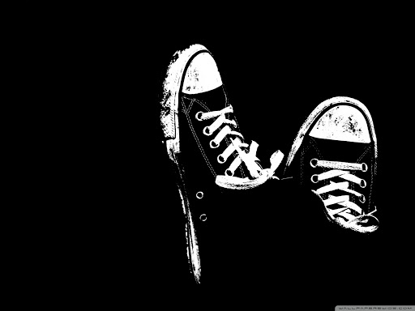

Novas Tendências
Dark-Theme ou Modo-Escuro
O esquema de cores claras sobre escuro , também chamado de modo preto , modo escuro , tema escuro ou modo noturno , é um esquema de cores que usa texto de cores claras, ícones e elementos gráficos da interface do usuário em um fundo escuro e é frequentemente discutido em termos de design de interface de usuário de computador e web design.
Um artigo de 2018 da Popular Science sugere que "O modo escuro é mais fácil para os olhos e a bateria" e exibir branco com brilho total usa aproximadamente seis vezes mais energia que o preto puro em um Google Pixel , que possui um display OLED.
Clique no ícone superior direito e veja